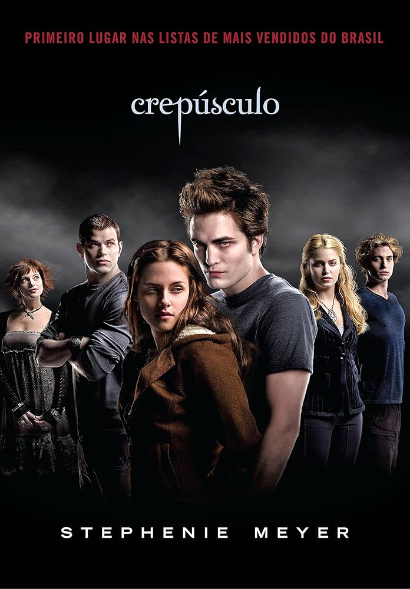

Crepúsculo (2008) acompanha Bella Swan (Kristen Stewart), que se muda para Forks e se apaixona por Edward Cullen (Robert Pattinson), um misterioso colega de classe. A relação se torna perigosa quando Bella descobre que Edward é um vampiro imortal, cujos instintos desafiam sua própria segurança e atraem inimigos
Os principais atores que protagonizaram a saga Crepúsculo (filmes baseados nos livros de Stephenie Meyer) são Kristen Stewart, Robert Pattinson e Taylor Lautner. A trama acompanha o romance sobrenatural entre uma humana, um vampiro e um lobisomem.
Volte para a pagina principal